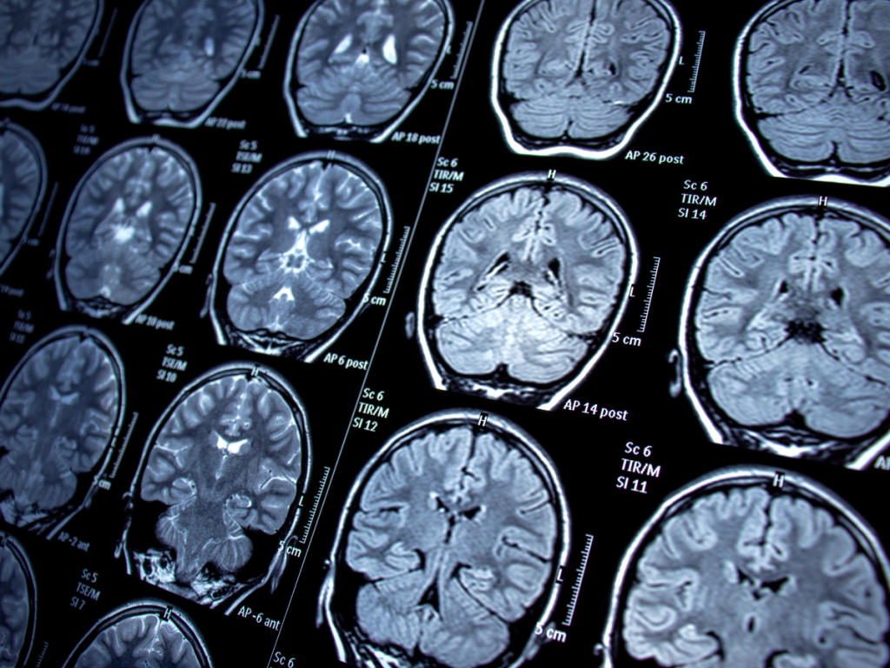
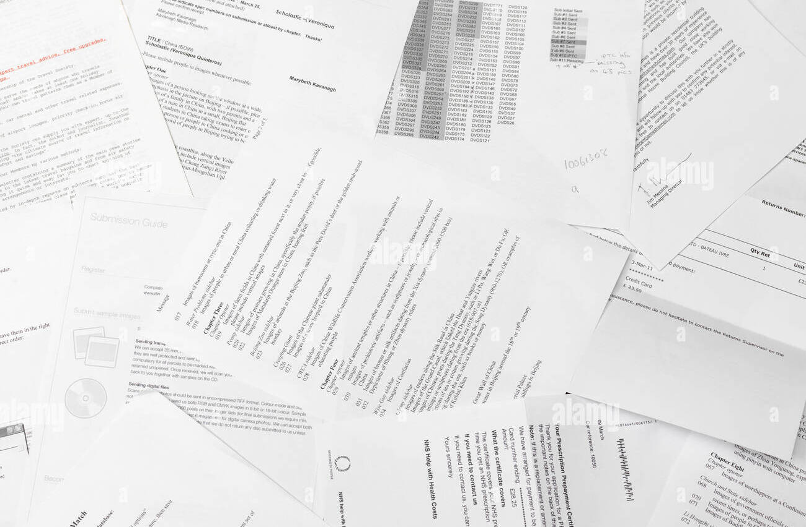

Зміст цього сайту
Даний сайт створено з метою рекламування кафедри комп'ютерних наук Вінницького Національного Технічного Університету. На цьому сайті ви знайдете інформацію про те, де може використовуватись один з головних елементів комп'ютерних наук - Штучний Інтеллект (ШІ), а точніше, де він може використовуватись у сфері медицини.
Медична візуалізація та діагностика
ШІ аналізує рентген, КТ, МРТ та зображення в патології й дерматології. Він помічає ознаки пухлин, переломів, інсультів чи діабетичної ретинопатії, іноді раніше й швидше за людину, і допомагає лікарю розставляти пріоритети серед великої кількості знімків. Це зараз найзріліша й найбільш регульована сфера, зокрема з багатьма схваленими алгоритмами.

Розробка ліків і персоналізована медицина.
ШІ прогнозує структуру білків, шукає кандидатів на нові препарати, скорочує час і вартість доклінічних досліджень, а також допомагає підбирати терапію під геном і профіль конкретного пацієнта, наприклад в онкології. Тут очікують найбільшого зростання в найближчі роки.
Клінічна документація та адміністрування.
ШІ-асистенти розшифровують розмову лікаря з пацієнтом і складають медичні записи, формують виписки та допомагають із кодуванням і плануванням. Це зменшує паперову роботу, яка забирає значну частину часу лікарів. Цей напрямок поширюється найшвидше, бо ризики нижчі, а користь помітна одразу.
